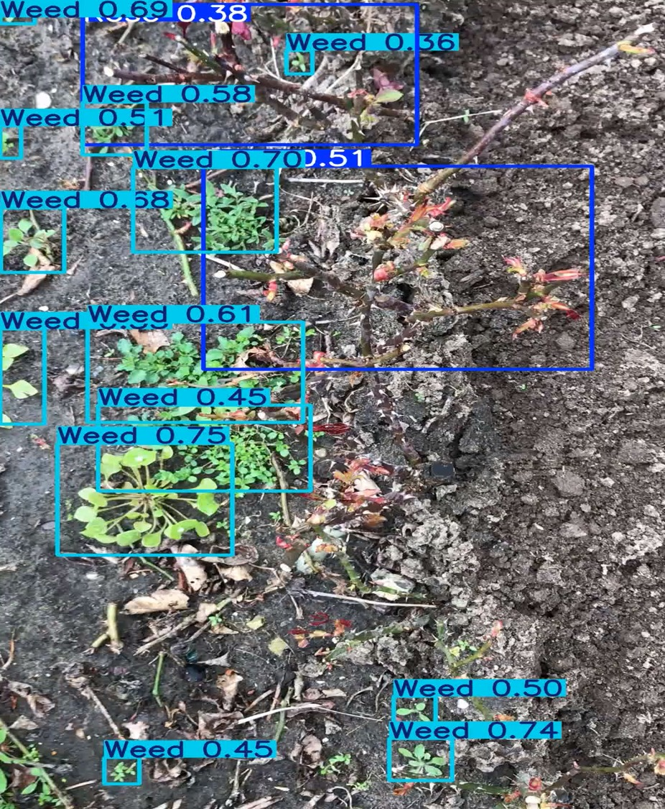

Portofoliu personal
David
Geamanu.
Îmi place să scriu cod care rezolvă probleme concrete. Aici găsești câteva dintre proiectele la care am lucrat.
++ ++
++
Despre mine.

Salut! Sunt David, student în anul patru la Fontys University of Applied Sciences, în Țările de Jos. Studiez inginerie software și informatică economică și îmi doresc să lucrez ca dezvoltator software. Îmi place să lucrez în echipă, să ascult ideile colegilor și să mă ocup de probleme care cer răbdare și perseverență.
Limbaje și tehnologii cu care am lucrat
- TypeScript
- Java
- React
- LoopBack 4
- Kotlin
- Flutter & Dart
- Python
- PostgreSQL
Ce știu să fac
- Dezvolt aplicații mobile
- Creez site-uri web
- Dezvolt API-uri și proiectez baze de date
Proiectele mele.
02 proiecte

↗ Vedere artificială
Detectarea buruienilor în culturile de trandafiri
Cum deosebești buruienile de trandafiri într-o fotografie, imediat după tăiere, când tufele mai au doar câteva frunze? În cadrul modulului Agricultural Systems de la Fontys Venlo, am lucrat cu GreenTechLab, CompasAgro și Frank Coenders la un prototip care identifică plantele în fotografii făcute pe teren. Scopul a fost să vedem dacă putem localiza buruienile suficient de precis pentru a le combate țintit.
Imagini din proiect 03
Aplicații mobile
Food Coach — Asistent pentru alegeri alimentare
Food Coach te ajută să alegi între două produse atunci când faci cumpărături. Vezi valorile nutriționale ale fiecăruia și le poți compara pe același ecran, ca să alegi ce ți se potrivește.
Imagini din proiect 02
 Plante identificate pe teren
Plante identificate pe teren Evoluția modelului în timpul antrenării
Evoluția modelului în timpul antrenării